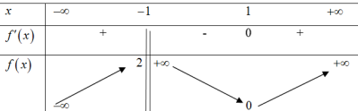
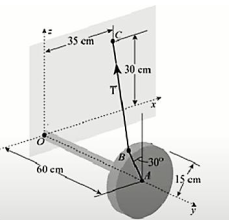
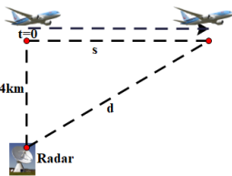
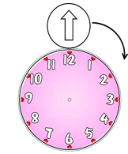
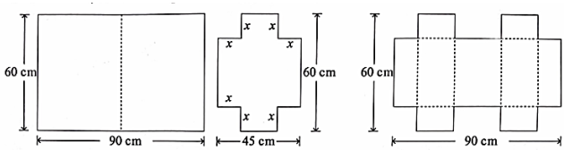

ĐỀ THI TOÁN - ĐỀ SỐ 38 HOT
Phần I: Trắc Nghiệm Nhiều Lựa Chọn
Tóm tắt kiến thức: Nguyên hàm của hàm số tổng
Nguyên hàm của \( f(x) = e^x + x \): \( \int e^x \, dx = e^x \), \( \int x \, dx = \frac{x^2}{2} \), cộng hằng số \( C \).
Câu 1:
Nguyên hàm của hàm số \( f(x) = e^x + x \) là:
Chọn đáp án:
Lời giải:
\( \int (e^x + x) \, dx = \int e^x \, dx + \int x \, dx = e^x + \frac{x^2}{2} + C \).
Đáp án: B.
Tóm tắt kiến thức: Diện tích hình phẳng
Diện tích hình phẳng giới hạn bởi \( y = f(x) \), \( y = 0 \), \( x = a \), \( x = b \): \( S = \int_a^b f(x) \, dx \).
Câu 2:
Gọi \( S \) là diện tích hình phẳng giới hạn bởi các đường \( y = e^x \), \( y = 0 \), \( x = 0 \), \( x = 2 \). Mệnh đề nào sau đây đúng?
Chọn đáp án:
Lời giải:
Diện tích: \( S = \int_0^2 e^x \, dx \).
Đáp án: B.
Tóm tắt kiến thức: Phương sai và độ lệch chuẩn
Phương sai: \( s^2 = \frac{1}{n} \sum f_i x_i^2 - \bar{x}^2 \), độ lệch chuẩn: \( s = \sqrt{s^2} \). Độ lệch chuẩn cao hơn tương ứng với rủi ro lớn hơn.
Câu 3:
Người ta ghi lại tiền lãi của một số nhà đầu tư vào hai lĩnh vực \( A \) và \( B \):

| Tiền lãi | \([5; 10)\) | \([10; 15)\) | \([15; 20)\) | \([20; 25)\) | \([25; 30)\) |
|---|---|---|---|---|---|
| Số nhà đầu tư lĩnh vực \( A \) | 2 | 5 | 8 | 6 | 4 |
| Số nhà đầu tư lĩnh vực \( B \) | 8 | 4 | 2 | 5 | 6 |
Chọn đáp án:
Lời giải:
Giá trị đại diện: \( 7,5; 12,5; 17,5; 22,5; 27,5 \).
Trung bình \( A \): \( \bar{x}_A = \frac{1}{25} (2 \cdot 7,5 + 5 \cdot 12,5 + 8 \cdot 17,5 + 6 \cdot 22,5 + 4 \cdot 27,5) = 18,5 \).
Trung bình \( B \): \( \bar{x}_B = \frac{1}{25} (8 \cdot 7,5 + 4 \cdot 12,5 + 2 \cdot 17,5 + 5 \cdot 22,5 + 6 \cdot 27,5) = 16,9 \).
Độ lệch chuẩn \( A \): \( s_A = \sqrt{\frac{1}{25} (2 \cdot 7,5^2 + 5 \cdot 12,5^2 + 8 \cdot 17,5^2 + 6 \cdot 22,5^2 + 4 \cdot 27,5^2) - 18,5^2} \approx 5,8 \).
Độ lệch chuẩn \( B \): \( s_B = \sqrt{\frac{1}{25} (8 \cdot 7,5^2 + 4 \cdot 12,5^2 + 2 \cdot 17,5^2 + 5 \cdot 22,5^2 + 6 \cdot 27,5^2) - 16,9^2} \approx 8,04 \).
\( s_B > s_A \), nên lĩnh vực \( B \) rủi ro hơn.
Đáp án: C.
Tóm tắt kiến thức: Phương trình đường thẳng
Đường thẳng qua \( A(x_1; y_1; z_1) \), vector chỉ phương \( \vec{u} = (a; b; c) \): \( \frac{x - x_1}{a} = \frac{y - y_1}{b} = \frac{z - z_1}{c} \).
Câu 4:
Trong không gian với hệ tọa độ \( Oxyz \), cho hai điểm \( A(1; 1; 2) \), \( B(2; -1; 3) \). Phương trình đường thẳng \( AB \) là:
Chọn đáp án:
Lời giải:
Vector chỉ phương: \( \overrightarrow{AB} = (2-1; -1-1; 3-2) = (1; -2; 1) \).
Phương trình đường thẳng qua \( A(1; 1; 2) \): \( \frac{x-1}{1} = \frac{y-1}{-2} = \frac{z-2}{1} \).
Đáp án: B.
Tóm tắt kiến thức: Tính chất hàm số
Cực tiểu tại \( x = a \) nếu \( f'(a) = 0 \), \( f'(x) \) đổi dấu từ âm sang dương. Tiệm cận đứng tại \( x = b \) nếu \( \lim_{x \to b} f(x) = \pm \infty \).
Câu 5:
Cho hàm số \( f(x) \) xác định, liên tục trên \( \mathbb{R} \setminus \{-1\} \), có bảng biến thiên:

| \( x \) | \(-\infty\) | \(-1\) | 1 | \( +\infty \) |
|---|---|---|---|---|
| \( f'(x) \) | + | - | 0 | + |
Chọn đáp án:
Lời giải:
A. Đúng: Tại \( x = 1 \), \( f'(x) = 0 \), đổi dấu từ âm sang dương, nên có cực tiểu.
B. Sai: Bảng biến thiên không cho thấy \( \lim_{x \to -1} f(x) = \pm \infty \), không có tiệm cận đứng.
C. Đúng: Có thể có tiệm cận ngang nếu \( \lim_{x \to \pm \infty} f(x) \) hữu hạn.
D. Đúng: Hàm không xác định tại \( x = -1 \), nên không có đạo hàm.
Đáp án: B.
Tóm tắt kiến thức: Tập xác định của hàm số
Hàm \( y = \sqrt{\log (x^2 + 3x) - 1} \) xác định khi \( x^2 + 3x > 0 \) và \( \log (x^2 + 3x) \geq 1 \).
Câu 6:
Tập xác định của hàm số \( y = \sqrt{\log (x^2 + 3x) - 1} \) là:
Chọn đáp án:
Lời giải:
Điều kiện: \( x^2 + 3x > 0 \Rightarrow x(x + 3) > 0 \Rightarrow x \in (-\infty; -3) \cup (0; +\infty) \).
\( \log (x^2 + 3x) \geq 1 \Rightarrow x^2 + 3x \geq 10 \Rightarrow x^2 + 3x - 10 \geq 0 \Rightarrow x \leq -5 \text{ hoặc } x \geq 2 \).
Kết hợp: \( (-\infty; -3) \cap (-\infty; -5] = (-\infty; -5] \), \( (0; +\infty) \cap [2; +\infty) = [2; +\infty) \).
Tập xác định: \( (-\infty; -5] \cup [2; +\infty) \).
Đáp án: A.
Tóm tắt kiến thức: Phương trình mặt phẳng
Mặt phẳng qua ba điểm \( A(a; 0; 0) \), \( B(0; b; 0) \), \( C(0; 0; c) \): \( \frac{x}{a} + \frac{y}{b} + \frac{z}{c} = 1 \).
Câu 7:
Mặt phẳng đi qua ba điểm \( A(0; 0; 2) \), \( B(1; 0; 0) \), \( C(0; 3; 0) \) có phương trình là:
Chọn đáp án:
Lời giải:
Mặt phẳng qua \( B(1; 0; 0) \), \( C(0; 3; 0) \), \( A(0; 0; 2) \): \( \frac{x}{1} + \frac{y}{3} + \frac{z}{2} = 1 \).
Đáp án: A.
Tóm tắt kiến thức: Mặt phẳng vuông góc
Hai mặt phẳng vuông góc nếu vector pháp tuyến của chúng vuông góc. Trong hình chóp, kiểm tra các cạnh và mặt phẳng liên quan.
Câu 8:
Cho hình chóp \( S.ABCD \) có đáy \( ABCD \) là hình thoi, \( SA = SC \). Khẳng định nào sau đây đúng?
Chọn đáp án:
Lời giải:
Gọi \( O = AC \cap BD \). Hình thoi \( ABCD \): \( AC \perp BD \).
Tam giác \( SAC \) cân tại \( S \): \( SO \perp AC \).
\( AC \perp (SBD) \), nên \( (SBD) \perp (ABCD) \).
Đáp án: A.
Tóm tắt kiến thức: Phương trình lũy thừa
Phương trình \( a^{f(x)} = 1 \): \( f(x) = 0 \).
Câu 9:
Số nghiệm của phương trình \( 2^{x^2 - x} = 1 \) là:
Chọn đáp án:
Lời giải:
\( 2^{x^2 - x} = 1 \Leftrightarrow x^2 - x = 0 \Leftrightarrow x(x - 1) = 0 \Leftrightarrow x = 0 \text{ hoặc } x = 1 \).
Có 2 nghiệm.
Đáp án: D.
Tóm tắt kiến thức: Cấp số cộng
Tổng \( n \) số hạng đầu tiên: \( S_n = \frac{n}{2} [2u_1 + (n-1)d] \).
Câu 10:
Cho cấp số cộng \( (u_n) \) có \( u_1 = \frac{1}{4} \), công sai \( d = -\frac{1}{4} \). Tổng của 5 số hạng đầu tiên \( S_5 \) là:
Chọn đáp án:
Lời giải:
\( S_5 = \frac{5}{2} \left[ 2 \cdot \frac{1}{4} + (5-1) \cdot \left(-\frac{1}{4}\right) \right] = \frac{5}{2} \cdot \left( \frac{1}{2} - 1 \right) = -\frac{5}{4} \).
Đáp án: C.
Tóm tắt kiến thức: Vector trong hình hộp
Quy tắc tổng vector trong hình hộp: \( \overrightarrow{DB'} = \overrightarrow{DA} + \overrightarrow{DD'} + \overrightarrow{DC} \).
Câu 11:
Cho hình hộp \( ABCD.A'B'C'D' \). Chọn đẳng thức vector đúng:
Chọn đáp án:
Lời giải:
Theo quy tắc hình hộp: \( \overrightarrow{DB'} = \overrightarrow{DA} + \overrightarrow{DD'} + \overrightarrow{DC} \).
Đáp án: A.
Tóm tắt kiến thức: Tính đơn điệu của hàm số
Hàm số nghịch biến trên khoảng nếu \( f'(x) < 0 \).
Câu 12:
Hàm số \( y = f(x) \) có bảng biến thiên:

| \( x \) | \(-\infty\) | 2 | \( +\infty \) |
|---|---|---|---|
| \( y' \) | - | - | - |
Chọn đáp án:
Lời giải:
\( y' < 0 \) trên \( (-\infty; 2) \) và \( (2; +\infty) \), nên hàm số nghịch biến trên các khoảng này.
Đáp án: C.
Phần II: Trắc Nghiệm Đúng/Sai
Tóm tắt kiến thức: Tiệm cận của hàm số
Tiệm cận đứng tại \( x = a \) nếu \( \lim_{x \to a} f(x) = \pm \infty \). Tiệm cận xiên \( y = mx + n \) nếu \( m = \lim_{x \to \pm \infty} \frac{f(x)}{x} \), \( n = \lim_{x \to \pm \infty} [f(x) - mx] \).
Câu 13:
Cho hàm số \( f(x) = \frac{x^2 - x + 2}{x + 1} \). Xét các phát biểu sau:
Chọn đáp án cho từng phát biểu:
a)
b)
c)
d)
Lời giải:
a) Đúng: \( x + 1 = 0 \Rightarrow x = -1 \), \( \lim_{x \to -1} f(x) = \pm \infty \).
b) Đúng: \( f(x) = x - 2 + \frac{4}{x + 1} \), \( \lim_{x \to \pm \infty} \frac{f(x)}{x} = 1 \), tiệm cận xiên \( y = x - 2 \).
c) Đúng: Tiệm cận xiên \( y = x - 2 \), tại \( x = 0 \): \( y = -2 \).
d) Sai: Tiệm cận đứng: \( x = -1 \), tiệm cận xiên: \( y = x - 2 \). Giao điểm: \( A(2; 0) \), \( D(0; -2) \), \( C(-1; -3) \), \( B(-1; 0) \). Diện tích tứ giác \( OBCD \): \( S = \frac{1}{2} \cdot 1 \cdot (2 + 3) = \frac{5}{2} \neq 3 \).
Đáp án: a) Đúng, b) Đúng, c) Đúng, d) Sai.
Tóm tắt kiến thức: Tọa độ và lực trong không gian
Vector lực có cùng hướng với vector chỉ phương, độ lớn tỷ lệ với vector. Góc giữa đường thẳng và mặt phẳng được tính qua vector chỉ phương và pháp tuyến.
Câu 14:
Một vật dụng bằng sắt nằm trên mặt sàn có tay cầm dài 58 cm nối với một ống trụ dày 4 cm gắn giữa ống trụ tới điểm \( C \) trên bờ tường. Trong hệ tọa độ \( Oxyz \), gốc tọa độ tại điểm \( A \) chính giữa ống trụ, điểm \( B \) có hoành độ âm, cao độ dương, \( AB \) tạo với trục \( Oz \) góc \( 30^\circ \). Lực căng \( \vec{T} \) trên đoạn dây \( BC \) có độ lớn 500 N.

Xét các phát biểu sau:
Chọn đáp án cho từng phát biểu:
a)
b)
c)
d)
Lời giải:
a) Đúng: \( C(35; 0; 30) \), hình chiếu lên \( (Oxy) \): \( (35; 0; 0) \).
b) Sai: \( \angle (AB, Oz) = 30^\circ \), \( Oz \perp (Oxy) \), nên \( \angle (AB, (Oxy)) = 90^\circ - 30^\circ = 60^\circ \).
c) Sai: \( B\left(-\frac{15}{2}; 60; \frac{15\sqrt{3}}{2}\right) \), \( \overrightarrow{BC} = \left( \frac{85}{2}; -60; 30 - \frac{15\sqrt{3}}{2} \right) \), \( 2 \cdot \frac{85}{2} - (-60) = 145 \neq 40 \).
d) Sai: \( \vec{T} = \frac{500}{|\overrightarrow{BC}|} \cdot \overrightarrow{BC} \), hoành độ: \( \frac{500}{75,47} \cdot \frac{85}{2} \approx 282 \, \text{N} \).
Đáp án: a) Đúng, b) Sai, c) Sai, d) Sai.
Tóm tắt kiến thức: Tích phân và khoảng cách
Khoảng cách từ radar đến máy bay: \( d(t) = \sqrt{s(t)^2 + h^2} \), với \( s(t) = \int_0^t v(t) \, dt \), \( h \) là độ cao.
Câu 15:
Một máy bay bay thẳng qua một trạm radar tại thời điểm \( t = 0 \), duy trì độ cao 4 km, vận tốc \( v(t) = 120 - 0,0005(t-4)^2 \, \text{m/s} \) (\( 0 \leq t \leq 200 \)).

Xét các phát biểu sau:
Chọn đáp án cho từng phát biểu:
a)
b)
c)
d)
Lời giải:
a) Sai: \( v(0) = 120 - 0,0005(0-4)^2 = 120 - 0,008 = 119,992 \, \text{m/s} \) (đúng nhưng cần kiểm tra ngữ cảnh).
b) Sai: \( s(6) = \int_0^6 [120 - 0,0005(t-4)^2] \, dt \approx 719,988 \, \text{m} \neq 720 \, \text{m} \).
c) Sai: \( d(t) = \sqrt{\left( \int_0^t v(t) \, dt \right)^2 + 4000^2} = \sqrt{s(t)^2 + 1,6 \cdot 10^7} \), không phải \( \int_0^t v^2(t) \, dt \).
d) Đúng: Tại \( t = 180 \, \text{s} \), \( s(180) = \int_0^{180} v(t) \, dt \), \( d(180) \approx 21 \, \text{km} > 20 \, \text{km} \).
Đáp án: a) Sai, b) Sai, c) Sai, d) Đúng.
Tóm tắt kiến thức: Xác suất và công thức Bayes
Xác suất toàn phần: \( P(B) = P(A)P(B|A) + P(\bar{A})P(B|\bar{A}) \). Công thức Bayes: \( P(A|B) = \frac{P(A)P(B|A)}{P(B)} \).
Câu 16:
Trong một công ty có hai nhà máy. Nhà máy \( I \) sản xuất 70% sản phẩm, nhà máy \( II \) sản xuất 30%. Xác suất làm ra phế phẩm của hai nhà máy lần lượt là 0,05 và 0,02. Gọi \( A \): “Sản phẩm của nhà máy \( I \)", \( B \): “Sản phẩm là phế phẩm”. Xét các phát biểu sau:
Chọn đáp án cho từng phát biểu:
a)
b)
c)
d)
Lời giải:
a) Đúng: \( P(A) = 0,7 \).
b) Sai: \( P(B|A) = 0,05 \).
c) Đúng: \( P(\bar{B}|\bar{A}) = 1 - P(B|\bar{A}) = 1 - 0,02 = 0,98 \).
d) Đúng: \( P(B) = 0,7 \cdot 0,05 + 0,3 \cdot 0,02 = 0,041 \), \( P(A|B) = \frac{0,7 \cdot 0,05}{0,041} = \frac{35}{41} \).
Đáp án: a) Đúng, b) Sai, c) Đúng, d) Đúng.
Phần III: Trắc Nghiệm Trả Lời Ngắn
Tóm tắt kiến thức: Góc giữa hai đường thẳng
Góc giữa hai đường thẳng được tính qua cosin của vector chỉ phương: \( \cos \theta = \frac{|\vec{u} \cdot \vec{v}|}{|\vec{u}| |\vec{v}|} \).
Câu 17:
Cho hình lập phương \( ABCD.A'B'C'D' \) có cạnh \( a \). Gọi \( I \) là trung điểm của cạnh \( BD \). Góc giữa hai đường thẳng \( A'D \) và \( B'I \) bằng bao nhiêu độ?
Nhập đáp án:
Lời giải:
Gọi \( O \) là tâm của \( A'B'C'D' \), \( OD \parallel B'I \), nên \( \angle (A'D, B'I) = \angle (A'D, OD) \).
\( OD = \frac{a\sqrt{6}}{2} \), \( OA' = \frac{a\sqrt{2}}{2} \), \( DA' = a\sqrt{2} \).
\( \cos \angle A'DO = \frac{OD^2 + DA'^2 - OA'^2}{2 \cdot OD \cdot DA'} = \frac{\sqrt{3}}{2} \Rightarrow \angle A'DO = 30^\circ \).
Đáp án: 30.
Tóm tắt kiến thức: Tối ưu hóa thể tích
Tối ưu thể tích hình hộp bằng cách xét đạo hàm và tìm cực trị của hàm thể tích.
Câu 18:
Một hình hộp chữ nhật có đáy là hình chữ nhật với chiều dài 60 cm, chiều rộng 45 cm, chiều cao \( h = 2x \) (cm). Người ta gấp một tấm kim loại để tạo hình hộp, với \( a = 45 - 2x \), \( b = 60 - 2x \). Thể tích lớn nhất của hình hộp là bao nhiêu lít? (Làm tròn đến hàng phần mười).

Nhập đáp án:
Lời giải:
Thể tích: \( V(x) = 2x (45 - 2x)(60 - 2x) = 8x^3 - 420x^2 + 5400x \), \( 0 < x < \frac{45}{2} \).
\( V'(x) = 24x^2 - 840x + 5400 = 0 \Rightarrow x = \frac{35 - 5\sqrt{13}}{2} \).
Tại \( x = \frac{35 - 5\sqrt{13}}{2} \), \( V_{\max} \approx 20468,04 \, \text{cm}^3 = 20,5 \, \text{lít} \).
Đáp án: 20,5.
Tóm tắt kiến thức: Khoảng cách trong không gian
Khoảng cách ngắn nhất từ điểm đến đường thẳng đạt khi đoạn thẳng vuông góc với đường thẳng.
Câu 19:
Trong một khu du lịch, du khách trượt zipline từ vị trí \( A(3; 2,5; 15) \) (cao 15 m) sang \( B(21; 27,5; 10) \) (cao 10 m). Bạn Tuấn đứng tại \( T(12; 21; 0) \). Khi du khách ở độ cao bao nhiêu mét thì cách bạn Tuấn gần nhất? (Làm tròn đến hàng phần mười).

Nhập đáp án:
Lời giải:
\( \overrightarrow{AB} = (18; 25; -5) \). Phương trình zipline: \( x = 3 + 18t \), \( y = 2,5 + 25t \), \( z = 15 - 5t \).
Điểm \( M(3 + 18t; 2,5 + 25t; 15 - 5t) \), \( \overrightarrow{TM} = (18t - 9; 25t - 18,5; 15 - 5t) \).
\( \overrightarrow{TM} \cdot \overrightarrow{AB} = 0 \Rightarrow t = \frac{1399}{1948} \Rightarrow z_M \approx 11,4 \, \text{m} \).
Đáp án: 11,4.
Tóm tắt kiến thức: Diện tích và chi phí
Diện tích khu vực giới hạn bởi các parabol được tính bằng tích phân. Tổng chi phí tính dựa trên diện tích và đơn giá.
Câu 20:
Một nhà sản xuất xây dựng sân khấu trên mảnh đất hình chữ nhật \( 20 \, \text{m} \times 10 \, \text{m} \). Hai parabol có đỉnh \( I_1 \), \( I_2 \) cùng hoành độ, parabol đỉnh \( I_1 \) tiếp xúc cạnh ngắn. Giao điểm \( A \), \( B \) và \( I_1 \), \( I_2 \) tạo hình thoi với \( I_1 I_2 = 16 \, \text{m} \), \( AB = 8 \, \text{m} \). Chi phí: sân khấu 2 triệu đồng/m², hậu trường 0,2 triệu đồng/m², khán đài 0,4 triệu đồng/m². Tổng chi phí là bao nhiêu triệu đồng? (Làm tròn đến hàng đơn vị).

Nhập đáp án:
Lời giải:
Parabol trên: \( y = -\frac{1}{2} (x^2 - 16) \), qua \( (0; 8) \).
Parabol dưới: \( y = \frac{1}{2} (x^2 - 16) \), qua \( (0; -8) \).
Diện tích sân khấu: \( S_{sk} = \int_{-4}^4 \left[ -\frac{1}{2} (x^2 - 16) - \frac{1}{2} (x^2 - 16) \right] dx = \frac{256}{3} \, \text{m}^2 \).
Diện tích khán đài: \( S_{kd} = \int_{-5}^5 \left[ \frac{1}{2} (x^2 - 16) + 12 \right] dx = \frac{245}{3} \, \text{m}^2 \).
Diện tích hậu trường: \( S_{ht} = 20 \cdot 10 - \frac{256}{3} - \frac{245}{3} = 33 \, \text{m}^2 \).
Chi phí: \( T = \frac{256}{3} \cdot 2 + 33 \cdot 0,2 + \frac{245}{3} \cdot 0,4 \approx 210 \, \text{triệu đồng} \).
Đáp án: 210.
Tóm tắt kiến thức: Xác suất Bayes
Xác suất có điều kiện: \( P(A|B) = \frac{P(A)P(B|A)}{P(B)} \), với \( P(B) = P(A)P(B|A) + P(\bar{A})P(B|\bar{A}) \).
Câu 21:
Sách giáo khoa được in tại hai phân xưởng \( A \) (60%) và \( B \) (40%). Tỷ lệ đạt chất lượng của \( A \) là 95%, của \( B \) là 90%. Chọn ngẫu nhiên một cuốn sách không đạt chất lượng. Xác suất cuốn sách đó được in tại xưởng \( A \) là bao nhiêu %? (Làm tròn đến hàng phần chục).
Nhập đáp án:
Lời giải:
Gọi \( A \): sách in tại xưởng \( A \), \( B \): sách không đạt chất lượng.
\( P(A) = 0,6 \), \( P(\bar{A}) = 0,4 \), \( P(B|A) = 0,05 \), \( P(B|\bar{A}) = 0,1 \).
\( P(B) = 0,6 \cdot 0,05 + 0,4 \cdot 0,1 = 0,07 \).
\( P(A|B) = \frac{0,6 \cdot 0,05}{0,07} \approx 0,429 \approx 42,9\% \).
Đáp án: 42,9.
Tóm tắt kiến thức: Diện tích hình phẳng
Diện tích hình phẳng giới hạn bởi hai đường \( y = f(x) \), \( y = g(x) \): \( S = \int_a^b |f(x) - g(x)| \, dx \).
Câu 22:
Cho hình phẳng giới hạn bởi các đường \( y = e^x \), \( y = e^{-x} \), \( x = 0 \), \( x = 1 \). Diện tích của hình phẳng này là bao nhiêu? (Làm tròn đến hàng phần trăm).
Nhập đáp án:
Lời giải:
Diện tích: \( S = \int_0^1 (e^x - e^{-x}) \, dx = \left[ e^x + e^{-x} \right]_0^1 = (e + e^{-1}) - (1 + 1) = e - 1 + e^{-1} - 1 \approx 2,35 \).
Đáp án: 2,35.